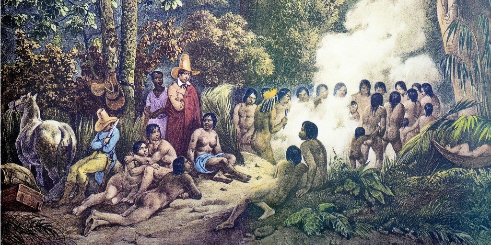
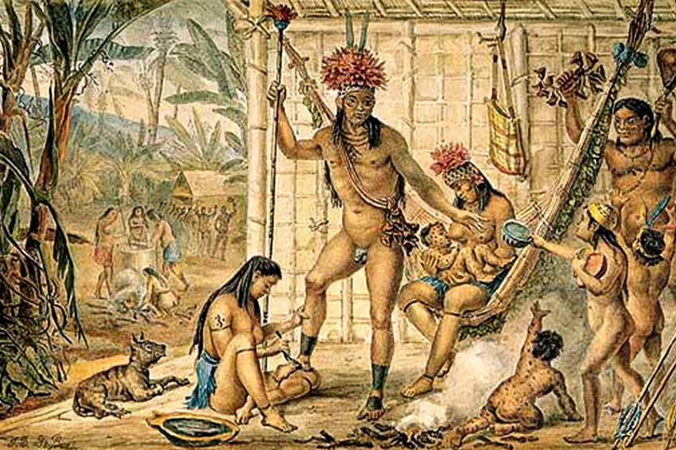

Pesquisas dizem que na época do "Descobrimento do Brasil" existiam cerca de 3 a 5 milhões de habitantes indígenas no Brasil. Entre essa vasta população é possível observar a existência de civilizações heterogêneas, as quais podem ser citadas: xavantes, caraíbas, tupis, jês e guaranis.O maior contato desenvolvido entre índios e europeus ocorreu nas faixas litorâneas do Brasil, onde predominam os povos pertencentes ao grupo tupi-guarani. Os tupi-guarani organizavam-se em aldeias que variavam entre 500 e 750 habitantes. Para conseguirem sobreviver, desenvolveram a exploração da coleta,caça, pesca e atividades agrícolas.
A realização das tarefas cotidinas poderia variar segundo o gênero e a idade de cada um dos integrantes da aldeia. As mulheres tinhas a a obrigação de desenvolver as atividades agrícolas, fabricar peças artesanais, processar os alimentos e cuidar dos menores. Já os homens deveriam realizar o preparo das terras e as atividades de caça e pesca. Tendo outro modelo de organização familiar, os índios organizavam casamentos e, em algumas situações, a poligamia era aceita.
No campo religioso, alguns desses povos acreditavam na existência dos espíritos, na reencarnação dos seus antepassados e na compreensão dos fenômenos naturais como divindades. Em diversas situações, esse corolário de crenças era fonte de explicação para a origem do mundo ou a ocorrência de algum evento significativo. Em alguns casos, os índios praticavam a antropofagia como um importante ritual em que os guerreiros da tribo absorviam a força e as habilidades dos inimigos capturados.
Quando os portugueses começam a explorar o pau-brasil das matas, começam a escravizar muitos indígenas ou a utilizar o escambo. Davam espelhos, apitos, colares e chocalhos para os indígenas em troca de seu trabalho.
O canto que se segue foi muito prejudicial aos povos indígenas. Interessados nas terras, os portugueses usaram a violência contra os índios. Para tomar as terras, chegavam a matar os nativos ou até mesmo transmitir doenças a eles para dizimar tribos e tomar as terras. Esse comportamento violento seguiu-se por séculos, resultando no pequenos número de índios que temos hoje.
A visão que o europeu tinha a respeito dos índios era eurocêntrica. Os portugueses achavam-se superiores aos indígenas e, portanto, deveriam dominá-los e colocá-los ao seu serviço. A cultura indígena era considera pelo europeu como sendo inferior e grosseira. Dentro desta visão, acreditavam que sua função era convertê-los ao cristianismo e fazer os índios seguirem a cultura europeia. Foi assim, que aos poucos, os índios foram perdendo sua cultura e também sua identidade.